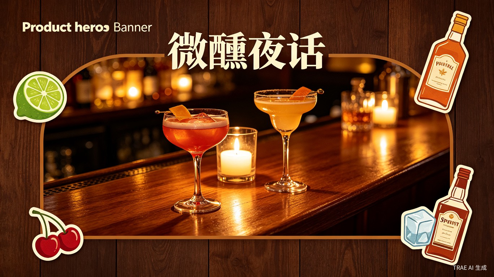
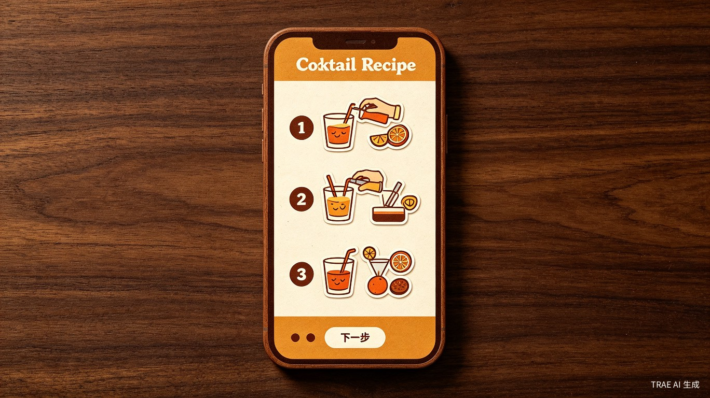
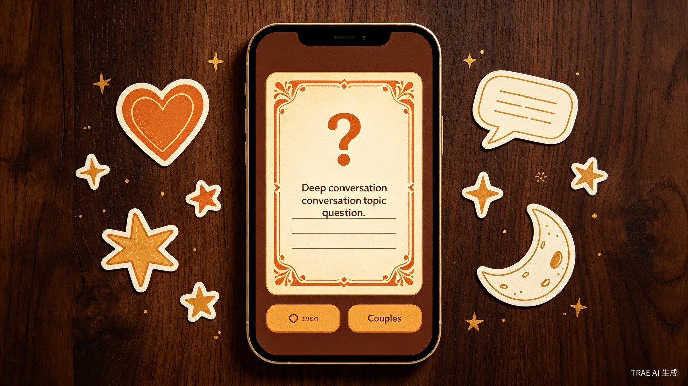
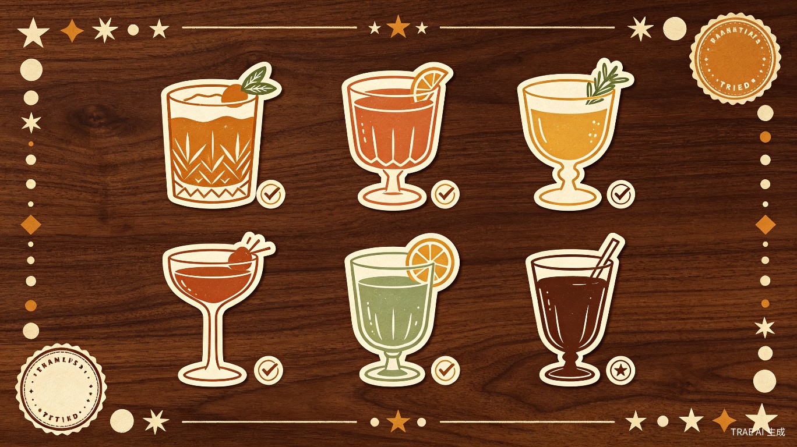

微醺夜话
调一杯酒，聊一段心事
一款专为情侣设计的便利店调酒 + 深度沟通小程序。在深夜微醺的氛围中，用精心策划的话题卡片，让你们重新找回那些被忙碌掩埋的深度对话。
了解创意方案想解决什么问题
在快节奏的都市生活中，越来越多的情侣陷入了"同居式孤独"——两人坐在一起，却各自刷着手机。便利店调酒是当下年轻人最易上手的仪式感，而深度沟通是维系亲密关系的核心。我们将两者结合，创造一个低门槛、高仪式感的约会新方式。
沟通表面化
情侣日常对话多围绕"吃什么""几点回家"，缺乏触及内心的话题引导，感情逐渐变成习惯而非连接。
约会同质化
看电影、吃饭、逛街——约会模式高度重复，缺少新鲜感和仪式感，难以创造有记忆点的共同体验。
手机依赖症
面对面却各自沉浸手机，缺乏能自然地把两人拉回彼此注意力的媒介和契机。
"很多爱情都是快餐式的爱情，大家工作都忙，深度沟通也少。我想做一个让两个人放下手机、面对面认真聊天的产品。"
为什么会想到做这个
灵感来源于小红书上爆火的"便利店调酒"趋势——年轻人发现用便利店就能买到的酒水和饮料，按照简单配方就能调出颜值高、口感好的鸡尾酒。这种低门槛的仪式感非常适合情侣在家约会。
同时，观察到身边很多情侣虽然住在一起，但真正的深度沟通越来越少。如果能在一个有氛围感的场景中（调酒的等待时间），自然地引入深度话题，就能把"调酒"这个行为变成"深度沟通"的触发器。
产品形态：微信小程序（依托微信生态，方便分享传播，后续可接入微信支付）。
核心功能体验
便利店调酒指南
从社媒精选的便利店调酒配方，整理成可视化的图文步骤。用户点击"上一步/下一步"逐步操作，调完酒后再进入话题页面——调酒是前奏，沟通才是主菜。
- 每次打开随机推荐一款调酒，保持惊喜感
- 根据用户历史调酒记录智能过滤已尝试过的酒
- 步骤式图文引导，零门槛操作
- 复古插画风格呈现，视觉体验统一

深度话题卡片
预设话题库覆盖感情回忆、未来规划、价值观、脑洞趣味等多个维度。每张话题卡片提供两个操作按钮："聊完了，下一个" 和 "换个话题"，AI 根据用户选择推荐不同方向的话题。
- "聊完了" → AI 推荐相关延伸话题
- "换个话题" → AI 推荐完全不同维度的话题
- 无需录音，规避隐私问题
- 话题难度递进，越聊越深入

调酒图鉴
登录后自动记录每次调酒历史，形成专属的"调酒图鉴"。用户可以看到自己尝试过的酒款、调酒次数、最常调的酒等数据，增加收集感和成就感。
- 微信一键登录，零注册成本
- 调酒历史记录与统计
- 图鉴式收藏展示
- 情侣共享调酒回忆

四步开启Shake Drink Talk
面向哪些用户
核心用户是 20-35 岁的都市情侣，他们有一定消费能力，追求生活仪式感，但工作繁忙导致深度沟通不足。产品主要面向面对面约会场景。
小美，26岁
互联网公司运营和男友同居一年，日常对话越来越像"室友"。想找点新鲜事一起做，但不想出门。喜欢在小红书看调酒笔记，但从来没试过。
阿杰，28岁
程序员经常加班到很晚，回家后只想躺着刷手机。知道女朋友不满意这种状态，但不知道聊什么。需要一个"破冰"的契机。
甜甜，23岁
大学生和男朋友异地恋，每次见面都想做点特别的事。喜欢有仪式感的活动，愿意尝试新鲜事物，会分享到朋友圈。
创意的价值
社会价值：修复亲密关系
在"快餐式爱情"盛行的时代，Shake Drink Talk提供了一个低门槛的深度沟通场景。通过调酒的仪式感和话题的引导，帮助情侣重新建立情感连接，对抗"同居式孤独"。这不仅是一个产品，更是一种倡导用心经营关系的生活方式。
商业价值：情感经济赛道
情感消费是持续增长的市场。产品以"便利店调酒 + 深度沟通"的独特组合切入，具备天然的社交传播属性（情侣分享调酒成果、话题截图）。后续可通过增值话题包、品牌酒水合作、线下微醺活动等方式变现。
效率价值：降低沟通成本
很多情侣不是不想深度沟通，而是不知道从什么话题开始。产品通过精心策划的话题库和智能推荐，消除了"聊什么"的决策成本，让深度沟通像调一杯酒一样简单自然。
技术实现
产品采用微信小程序原生开发，后端使用云开发（微信云开发 / Node.js），AI 话题推荐通过调用大模型 API 实现。视觉风格以胡桃木深色背景 + 复古插画贴纸为主，营造深夜微醺的调酒氛围。
感受话题卡片
点击下方按钮，体验"Shake Drink Talk"的话题切换逻辑